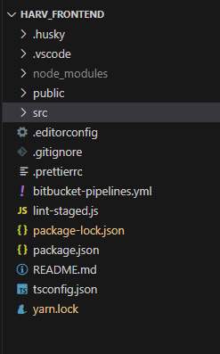
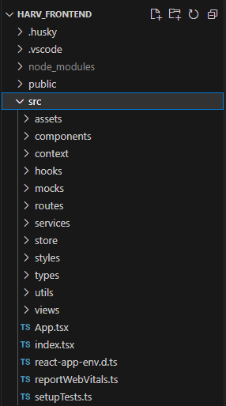
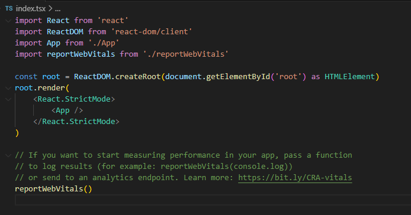

2.2- Estrutura de Pastas do Projeto
Todos os projetos devem procurar seguir a estrutura de folders descrita a seguir.
Na pasta principal do projeto, cujo nome é o nome do projeto, ou uma abreviação deste nome, tem-se o seguinte conteúdo:

| Pasta/Arquivo | Conteúdo |
|---|---|
| .husky | |
| .vscode | |
| node_modules | Pasta gerenciada automaticamente pelo pacote npm. Não deve ser alterada, manualmente. |
| public | Pasta onde ficam os arquivos estáticos básicos necessários para exibição do aplicativo no navegador cliente, incluindo o arquivo index.html. Os demais arquivos estáticos são mantidos na pasta /src/assets. |
| src | Pasta onde fica o código do aplicativo, descrita na seção abaixo. |
| .editorconfig | |
| .gitignore | Arquivo para configuração dos arquivos e pastas, que não devem ser armazenados remotamente pelo gerenciador de versões Git. |
| .prettier | Arquivo de configurações do plugin prettier. |
| .bitbucket-pipelines.yml | Configurações para execução dos pipelines de deploy no ambiente de dev. Mantido pela equipe DevOps. |
| lint-staged.js | |
| package.json | Arquivo que controla quais bibliotecas devem ser instaladas pelo comando npm install |
| package-lock.json | Arquivo utilizado pelo npm, em conjunto com o arquivo package.json, cuja função é impedir que o npm instale versões posteriores às que constam nele, visando assim reduzir problemas de compatibilidade entre as versões das bibliotecas e o próprio node.js. |
| tsconfig.json | Arquivo de configurações do TypeScript, no projeto. |
| yarn.lock | Similar ao arquivo package-lock.json, se estiver sendo usado o pacote yarn, em lugar do npm. |
Conteúdo da pasta /src
Na pasta '/src' deve-se procurar seguir os nomes de arquivos e sub-folders vistos na figura abaixo

| Pasta/Arquivo | Conteúdo |
|---|---|
| assets | Todos os ícones, imagens, áudios, etc. estáticos a serem exibidos nas diversas telas e componentes do sistema. |
| components | Todos os componentes do aplicativo, incluindo modais, que não são telas do sistema. |
| context | Todos os componentes que provêm contexto no aplicativo. |
| hooks | Todos os componentes do tipo Hook. |
| mocks | Todos os componentes ou estruturas com dados mocados. |
| routes | O componente Router e todo o código que implementa o roteamento e navegação entre páginas, no aplicativo. |
| services | Arquivos que implementam serviços de acesso a APIs, backend, bancos de dados, serviços de storage, etc., cujas funções, são, normalmente, chamadas pelas funções (métodos) dos componentes declarados na pasta components ou na pasta views. |
| store | Código que implementa o gerenciamento de state usando react-redux. |
| styles | Código que define os temas e estilos padrão do aplicativo. |
| types | Declarações das interfaces e tipos typescript usadas no aplicativo. |
| utils | Funções genéricas e auxiliares para a implementação do aplicativo. |
| views | Todos os componentes que são telas do aplicativo. |
| App.tsx | Este arquivo declara o componente raiz do aplicativo, sempre chamado de App, o qual inicia a renderização do componente Routes, que por sua vez, controla a renderização das demais telas do sistema. A seção 2.3- Programa - Roteamento de páginas apresenta mais detalhes sobre o funcionamento destes componentes. |
| index.tsx | Este arquivo é gerado automaticamente pelo script create-react-app, é padrão em todos os frontends e, basicamente, é usado para vincular o componente React raiz, do aplicativo, ao elemento HTML que apresenta o conteúdo da página de entrada do aplicativo.  Como padrão, sempre chamamos o componente React raiz de 'App' e o elemento HTML, que apresenta o conteúdo da página index.html, de 'root', como se observa na figura acima. Além disso, o arquivo 'index.html', é sempre criado na pasta '/public' pelo script create-react-app. |